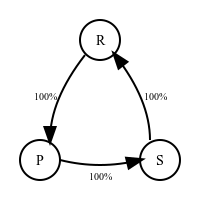

graph TD
B["Level 0: 'I'll just play Rock'"]
B --> C["Level 1: 'I think they'll play Rock,<br>so I'll play Paper'"]
C --> D["Level 2: 'They think I'll play Paper,<br>so they'll play Scissors,<br>therefore I should play Rock'"]
D --> E["Level 3: 'They think I'll play Rock<br>so they'll play Paper,<br>therefore I should play Scissors'"]
E --> F["Level 4: 'They think I'll play Scissors<br>so they'll play Rock,<br>therefore I should play Paper'"]
F --> H["Level 5: 'They think I'll play Paper<br>so they'll play Scissors,<br>therefore I should play Rock'"]
H --> I["Level 6: 'They think I'll play Rock<br>so they'll play Paper,<br>therefore I should play Scissors'"]
I --> G[". . ."]
style B fill:#ffcccc,stroke:#666
style C fill:#cce5ff,stroke:#666
style D fill:#ffcccc,stroke:#666
style E fill:#d4edda,stroke:#666
style F fill:#cce5ff,stroke:#666
style H fill:#ffcccc,stroke:#666
style I fill:#d4edda,stroke:#666
style G fill:#f9f9f9,stroke:#666
RPS.bot: Intro to Opponent Modeling
At the heart of opponent modeling is maximizing reward and not getting exploited, which in practice means predicting your opponent’s next move and not being predictable yourself.
While game theory optimal play is an interesting mathematical exercise, it’s often not actually the most rewarding strategy in practice, though it is useful to understand as a baseline.
Especially when humans play against each other, there is an element of “leveling” – trying to figure out which level your opponent is on:
Axes of opponent modeling
There are a few main axes for opponent modeling in games.
Types of opponents
Here are a few types of opponents and an example for each.
Fixed static opponents: Playing Rock
Random static opponents: Playing 60% Rock, 20% Paper, 20% Scissors
Dynamic with no relation to game, i.e. a static Markov model: Playing RPSRPSRPS…

Dynamic only related to a limited subset of actions, like:
- Only our own actions: Randomly play an action that we didn’t play in the last 2 games
- Only opponent actions: Play the action that beats the most frequent of the opponent’s last 3 moves
- Only most recent action: Copy the opponent’s last move (only most n actions is also called recall, so if we say recall = 1 that means only based on the most recent action, while recall = 3 is based on the last 3 actions, etc.)
Simple dynamic related to entire history of actions: Play the move that beats the most frequent opponent move so far
Dynamic with randomness: An agent that randomly selects between multiple dynamic or static strategies. For example: An agent that plays all Rock for the first 20 games and then all Scissors for the next 20 games and then plays the move that beats the most frequent opponent move so far.
Advanced dynamic related to entire history of actions: Sophisticated adversarial prediction algorithm or set of algorithms
Human play vs. bot play
Building bots is an exercise in meta-strategies, while playing as a human is traditionally more of a psychological battle, combining pattern recognition with adaptive thinking.
Regardless of facing a bot or human, the overall goal remains to maximize payoffs by taking advantage of opponent weaknesses and minimizing your own exploitability.
Bot vs. human: Humans tend to be predictably irrational. This can manifest itself as someone having favorite preferred moves, making “tilted” decisions, reacting to previous games in predictable ways, or having “leaks” like never throwing the same move three times in a row.
Bots playing against humans should focus on detecting and exploiting these kinds of cognitive biases and patterns.
Bot vs. bot: In RPS, single bot vs. single bot is generally less interesting because playing the Nash equilibrium is so simple.
We use combinations of suboptimal bots in our challenge games to reinforce thinking strategically about how to respond to opponents.
Human vs. human: This is a very psychological game! “Leveling” is common in human vs. human play. Maybe you think your opponent expects you to play Rock, so then you expect that they’ll play Paper, so you should play Scissors, but maybe they’ll realize this and play Rock to counter the Scissors, so you should actually play Paper, and so on.
Success comes from maintaining unpredictability while picking up on opponents’ patterns and emotional states.
Human vs. bot: When humans play against adversarial bots, they need to avoid falling into predictable patterns (not that easy!).
Types of games/knowledge
- Play a single known opponent (known meaning you know their entire strategy)
- Play multiple known opponents
- Play a single unknown opponent
- Play multiple unknown opponents
- Play multiple unknown opponents that include some suboptimal house bots and some human-created bots
Measuring performance
There are a few main ways to measure performance in games:
- Against a baseline opponent
- Against a range of different opponents
- Against a maximally exploitable opponent
In RPS, we’ll mostly be thinking about matches against a range of different opponents, though will start by looking at counter-strategies against individual opponent strategies.